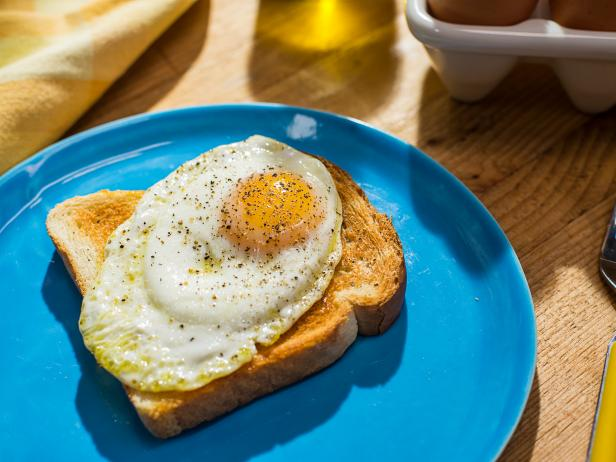

Sunny Side Up Eggs

Description
This recipe will have you making delicious sunny side up eggs and toast in no time! Just follow the simple instruction, step-by-step and you'll be chowing down in 10 mins or less!
Ingredients
- Medium Eggs [2]
- Extra Virgin Olive Oil [1 tbsp]
- Salt
- Pepper
- French Thyme
- Butter
- Bread/Bagel
Steps
- Set pan on oven and turn to low heat and wait for a few minutes
- Once the pan feels slightly warm, add Olive Oil and let sit for about a minute
- Crack both eggs and add to pan, careful not to break the yokes
- Add Salt, Pepper and Thyme as desired
- Put lid on pan and then begin toasting desired bread
- When the bread is finished, butter it and then check on the eggs
- If the clear liquid around the yoke has become while and solid looking, the eggs are finished
- Remove eggs from pan and place on buttered bread
- Enjoy!